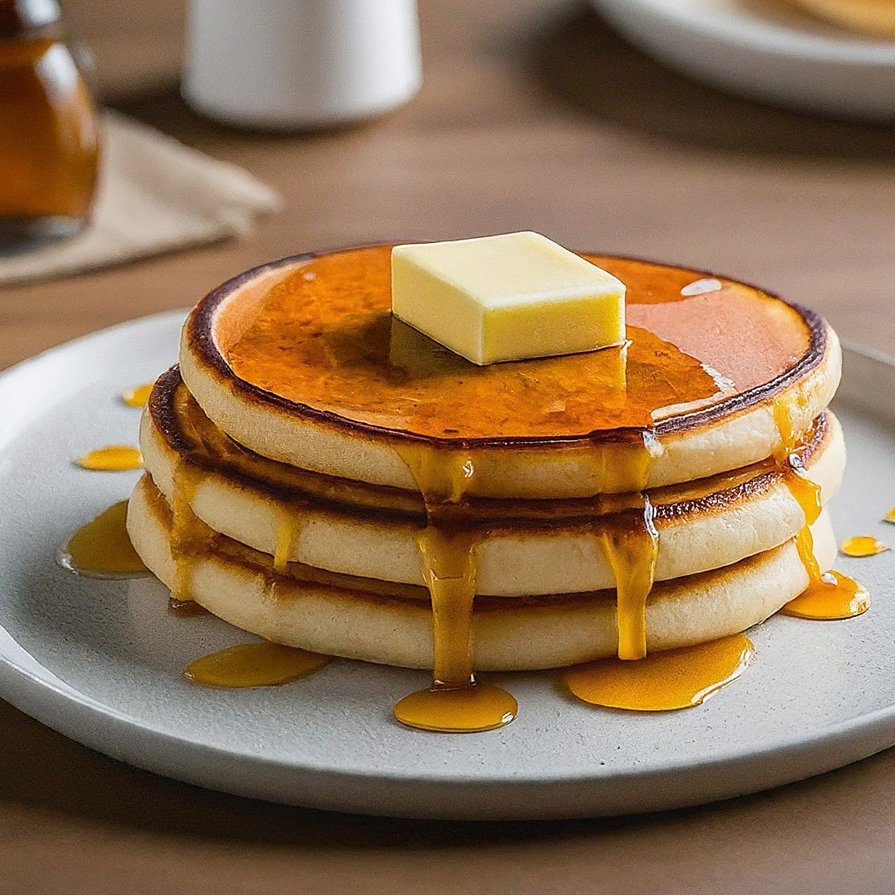

Pancakes

Pancakes are a delicious morning breakfast food that will give you energy until your
stomach rumbles for more food, here's what you'll needs for this recipe:
- 1 Cup All-Purpose Flour
- 2 Tablespoons Sugar
- 2 Teaspoons Baking Powder
- 1/2 Teaspoon Salt
- 1 1/4 Cups Milk
- 1 Egg
- 2 Tablespoons Melted Butter
Instructions
- In a large bowl, whisk together flour, sugar, baking powder, and salt.
- In a separate bowl, whisk together milk, egg, and melted butter.
- Pour the wet ingredients into the dry ingredients and mix until just combined (a few lumps are okay).
- Heat a lightly greased griddle or frying pan over medium heat.
- Pour 1/4 cup batter for each pancake.
- Cook for 2-3 minutes per side, or until golden brown and bubbles appear on the surface.
- Serve warm with your favorite toppings like syrup, fruit, whipped cream, etc.
Index